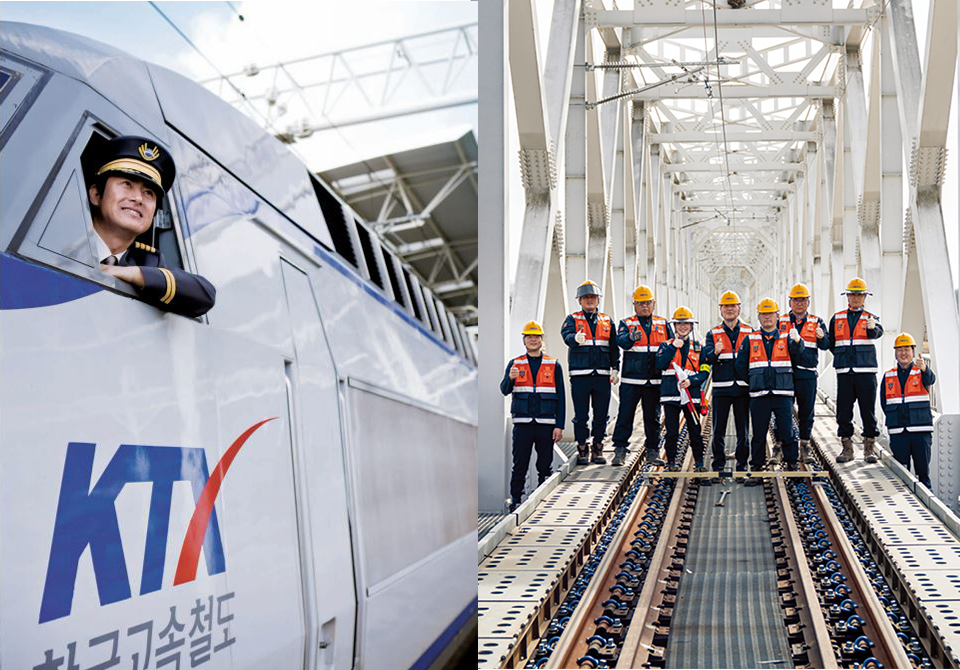

안전하고 편리한
철도 서비스 제공으로
국민행복 증진과
사회적 책임을 강화하고
남북 대륙철도 연결과
미래 성장동력을 확보하여
철도 중심의 생활문화 조성

코레일소개 컨텐츠 영역
공사소개
코레일은 120년 역사의
최고 철도경영 전문기업입니다.
코레일은 누구나 안전하고 편안하게 기차여행의 기쁨을 누릴 수 있도록
철도안전과 수준 높은 서비스를 위해 최선을 다하고 있습니다.
대한민국 철도의 역사는 곧 코레일의 역사입니다. 1894년 철도국 창설, 1899년 경인선의 힘찬 기적소리가 울리며, 대한민국 철도의 역사가 시작됐습니다.
그 후 코레일은 100년이 넘는 역사를 이어오며, 전국 방방곡곡 철길을 따라 사람과 물자를 연결하고, 대한민국의 성장을 이끌어왔습니다.
앞으로도 코레일은 대륙으로 이어질 철길을 통해, 한반도 평화의 주춧돌을 놓고, 대한민국의 사람과 물자가 세계로 뻗어나가는 미래를 준비하겠습니다.

CEO
대한민국의 내일
국민의 코레일
코레일은 100년이 넘는 역사를 이어오며,
전국 방방곡곡 철길을 따라 사람과 물자를 연결하고,
대한민국의 성장을 이끌어 왔습니다.
코레일의 모든 직원들은 국민 누구나 안전하고
편안하게 기차 여행의 기쁨을 누릴 수 있도록,
안전한 철도 운행과 수준 높은 서비스를 위해
24시간 잠들지 않고 최선을 다하고 있습니다.
'국민의 안전과 생명을 지키는 것’을 공공철도의
사명으로 여기고, 사람이 중심이 되는 철도 운영에
힘쓰겠습니다.
코레일은 고속열차(KTX), 일반열차, 광역전철을 운행,
하루 350만명을 수송하는 명실상부한 '국민의 발'
역할을 수행하고 있으며, 화물열차는 대한민국 친환경
물류 수송의 한 축을 차지하고 있습니다.
철길을 통해 지역경제에 새 희망의 길을 뚫고,
전 국토에 활기를 불어넣으며, 지역 균형 발전의
지렛대가 되고자 합니다.
또한 코레일은 대륙으로 이어질 철길을 통해,한반도
평화의 주춧돌을 놓고, 대한민국의 사람과 물자가
세계로 뻗어나가는 미래를 확실히 준비하겠습니다.
그 새로운 변화의 여정에 국민여러분께서 동반자가
되어주시기를 희망합니다. 한국철도의 미래,
대한민국의 내일을 위해 아낌없는 격려와 지원을
부탁드립니다. 고맙습니다.